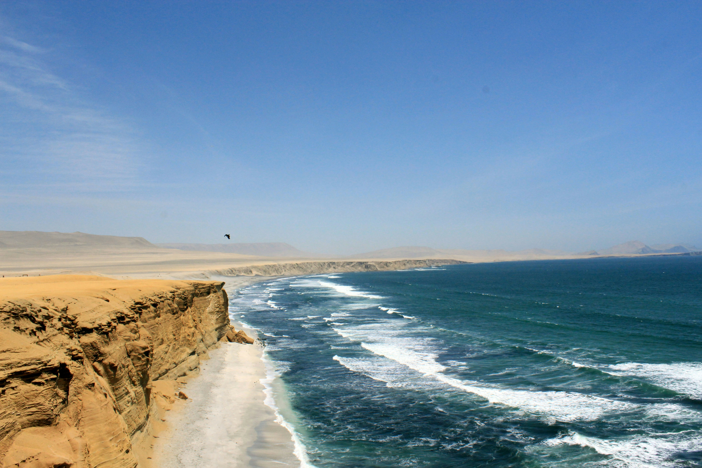

PERU TRAVEL
About Peru
Peru is one of the world’s most varied countries. It is a multicultural nation, filled with traditions, a unique gastronomy and vast natural reserves. It is home to 12 UNESCO World Heritage Sites and 84 of the planet’s 117 life zones. Peru is situated in the western part of South America and shares borders with Ecuador, Colombia, Brazil, Bolivia and Chile. Its enormous territory, covering more than 1.2 million square kilometers, is composed of three regions: Coast, Highlands and Jungle. Its current population exceeds 31.5 million inhabitants.
Tourism
Thanks to a long history defined by major ancient civilizations, Peru is home to more than 5000 archaeological sites. Many of these remain shrouded in mystery, but are still capable of transporting visitors to the periods when such societies flourished. For example, a visit to Machu Picchu reveals the perfection of the Inca empire; this sacred city can be reached onboard the luxurious trains that run through imposing mountain scenery dotted with colorful Andean villages.
Peru is synonymous with natural beauty and it is one of the world’s ten most biologically diverse countries. With more than 200 protected natural areas, it possesses 84 of the planet’s 117 life zones. Peru has created 14 national parks, 15 national reserves, 9 national sanctuaries and 11 reserved zones. It is home to more than 1800 species of birds and 10% of all the reptile, mammal and fish species that exist on Earth. It also has 3 500 varieties of orchids.
Peru is also a paradise for lovers of adventure, offering a range of outdoor sporting activities for the curious, beginners, amateurs and experts, including trekking, climbing, mountain biking, surfing, paragliding, hang gliding, camping, canoeing and kayaking. These are just some of the most popular activities that form part of the host of possibilities offered by the varied geography of Peru.
The best places
CUSCO

In Cusco, every corner is filled with history, as the ancient capital of Peru (during the Inca Empire) still preserves remnants of the most important power of this ancient civilization.
More...PARACAS
If you are into sun and beach, you have to head north. But, what could happen if, besides finding perfect resorts to relax, you are offered diverse options to start an adventure and connect with nature? If the idea pleases you, do not to think about it twice: Tumbes is the ideal destination for you and your loved ones.
More...AREQUIPA

Arequipa has it all. Yes, absolutely everything you can imagine can be found in the territory of the 'White City.' History, adventure, fabulous landscapes, wildlife, gastronomy, art, and much more are hidden in the Villa of Our Lady of La Asunta of Arequipa - the name with which it was founded in 1540 - which is firmly guarded by its most imposing natural attraction: the Misti volcano.
More...LIMA

Lima is the gastronomic capital, not only of Peru but also of South America (and, why not say it, of the whole world, soon). Anyone who arrives in Lima is enchanted by the varied, delicious, and prestigious food served at its table; with ancient recipes, dishes fused with other cultures, and a truly unique flavor.
More...